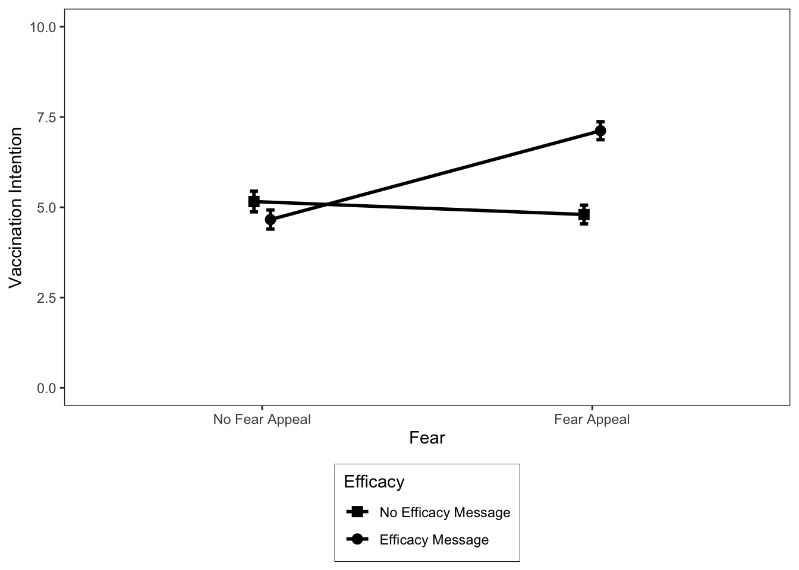

setwd("~/psyc214_lab_6")6. Introduction to Factorial Designs and Interactions
Mark Hurlstone, Richard Philpot
Here’s one of my favorite quotes for those times when you feel like you have been confronted with an impossible obstacle. It’s about turning obstacles to your advantage to get where you need to go.
The impediment to action advances action. What stands in the way becomes the way. –Marcus Aurelius, The Meditations
![Marcus Aurelius—the philosopher king and the last of the five good emperors.}(images/MarcusAurelius.png){width=50%}
Learning Objectives
In this Week’s lecture, we provided a conceptual introduction to factorial designs and interactions (deferring a discussion of the statistical mechanics of factorial ANOVA for future weeks). You learned that the outcomes of a factorial ANOVA include:
Main effects: the mean differences among the levels of one factor are called the main effect of that factor. Main effects provide information about the independent effects of each factor. A two-factor study has two main effects, one for each of the two factors.
Interaction: sometimes, one factor has a direct influence on the effect of a second factor, producing an interaction between factors. An interaction occurs whenever two factors, acting together, produce mean differences not explained by the main effects of the two factors.
Simple main effects: the simple main effects break down the main effects into their component parts. They reveal the effect of one factor at each level of the second factor. A simple main effects analysis allows us to determine how two factors are combining to influence the dependent variable.
In factorial designs, data visualization becomes even more important than in single-factor designs. If a factorial ANOVA produces a significant interaction, then the easiest way to interpret it is by graphing the data in terms of an interaction plot and studying the simple main effects. Interaction plots are either graphed as line plots, like the ones presented in the lecture, or as bar plots. In this lab class, we will show you how to generate both kinds of plots in an appropriate format for presenting in your reports. You will also obtain experience of detecting/interpreting interactions by looking at each of the simple main effects in graphed data.
Getting Started
To get started, we first need to log into the R Studio Server.
You can access Lancaster University’s RStudio Server at http://psy-rstudio.lancaster.ac.uk. At present, you will need to be on campus, or connected to the VPN to access this. If you do not yet have Eduroam (the university wifi) available on your personal device, please follow the instructions from the PSYC214 Announcement Page https://modules.lancaster.ac.uk/mod/forum/discuss.php?d=437608
![}(images/RStudioSignIn.png){width=75%}
If you are on Eduroam (or VPN if off campus) and have accessed the R Studio Server from the URL above, you will now see a login screen (see above). Please use your normal Lancaster University username (e.g., bloggsj). Your own individual RStudio Server password was sent in an email, prior to the first lab, by Kay Rawlins: email header ‘R Studio Server login details’. Please make sure you have this.
Once you are logged into the server, create a folder for today’s session. Navigate to the bottom right panel (see figure below) and under the Files option select the New Folder option. Name the new folder psyc214_lab_6. Please ensure that you spell this correctly otherwise when you set the directory using the command given below it will return an error.
![}(images/NewFolder.png){width=75%}
Now that you have created a folder for today’s session, it’s time to add the Week 6 data file. Head on over to the PSYC214 Moodle page, access the lab folder for Week 6, and download the file fearVac.csv to your desktop. Next, in the RStudio Server open your new pscy214_lab_6 folder. When in the new folder, select the Upload tab. This will present a box that will ask where the data is that you want to upload. Click on Browse, find the fearVac.csv file on your desktop and click OK.
Se we can save this session on the server, click File on the top ribbon and select New project. Next, select existing directory and name the working directory ~/psyc214_lab_6 before selecting create project.
Finally, open a script for executing today’s coding exercises. Navigate to the top left pane of RStudio, select File –> New File –> R Script. Working from a script will make it easier to edit your code and you will be able to save your work for a later date.
![}(images/RScript.png){width=75%}
Let’s set our working directory:
Before moving on, let’s load the relevant libraries that we will be using in today’s session.
library("tidyverse")
library("tidyr")
library("rstatix") Today’s Lab Activities
A 2 \(\times\) 2 factorial study
Let’s start by revisiting the COVID-19 vaccination example presented in the lecture. In that example, a researcher is interested in identifying effective strategies for encouraging members of the general public to get vaccinated against COVID-19. The researcher decides to test an often employed intervention to reduce risky intentions or behaviours known as a fear appeal. A fear appeal is a persuasive message that attempts to induce fear in message recipients by emphasizing the potential danger and harms that will befall them if they do not adopt the messages’ recommendations. Graphic images on cigarette packages (e.g., a diseased eye, cancerous lungs, or a damaged heart) encouraging people to quit smoking are a classic example of a fear appeal. The researcher crafts a fear appeal—a short verbal message—drawing people’s attention to the various risks associated with contracting COVID-19, including long-term debilitating symptoms (so-called “long COVID”) such as lack of attention, concentration, and lethargy, as well as potential death. The researcher includes in the message a graphic image of a patient in a distressed state on a ventilator in a hospital bed. The researcher wants to know if a group of participants that receive the fear appeal express a greater intention to get vaccinated against COVID-19 than a group of participants that do not receive the fear appeal. The researcher plans to measure such intentions by asking people how likely it is that they would get vaccinated against COVID-19 on a scale ranging from 0 (Very Unlikely) to 10 (Very Likely).
However, the researcher knows that for fear appeals to be effective, they typically must be accompanied by a self-efficacy message—a statement that assures message recipients that they are capable of performing the fear appeal’s recommended actions and/or that performing the recommended actions will result in desirable consequences. For example, cigarette packets as well as arousing fear using graphic images also direct smokers to resources to help them to quit smoking and highlight the benefits of doing so (the self-efficacy message component). Accordingly, the researcher creates a self-efficacy message that emphasizes to message recipients how easy it is for them to get vaccinated, how to do so, and the benefits that will be obtained once they have been immunized.
The researcher wants to know what independent or interactive effects the fear appeal and self-efficacy message may have on COVID-19 vaccination intentions, so she decides to run a 2 \(\times\) 2 fully between-participants factorial study involving a total of N = 200 participants, with the following factors:
- Fear: no fear appeal vs. fear appeal
- Efficacy: no efficacy message vs. efficacy message
This results in four different groups of participants. One group (N = 50) receives no fear appeal and no efficacy message. A second group (N = 50) receives the fear appeal but no efficacy message. A third group (N = 50) receives no fear appeal but does receive an efficacy message. A fourth group (N = 50) receives both the fear appeal and the efficacy message. All groups of participants then indicate their intention to vaccinate against COVID-19 using the vaccination intention measure described above. The four conditions are summarized in the table below.
![}(images/DataMatrix.png){width=75%}
First things first, let’s load the data set:
# Import the data
data = read_csv("data/fearVac.csv")
# View the data
(data)# A tibble: 200 × 4
Par Fear Efficacy Intention
<dbl> <chr> <chr> <dbl>
1 1 No Fear Appeal No Efficacy Message 6
2 2 No Fear Appeal No Efficacy Message 4
3 3 No Fear Appeal No Efficacy Message 7
4 4 No Fear Appeal No Efficacy Message 8
5 5 No Fear Appeal No Efficacy Message 5
6 6 No Fear Appeal No Efficacy Message 6
7 7 No Fear Appeal No Efficacy Message 2
8 8 No Fear Appeal No Efficacy Message 6
9 9 No Fear Appeal No Efficacy Message 5
10 10 No Fear Appeal No Efficacy Message 3
# … with 190 more rowsTake a look at the table summarising the data. Beneath each variable name, R tells us the variable type. There is an issue here in that the variables Fear and Efficacy are designated as character variables <chr>. This simply means that they are represented as strings of text. However, we want these variables to be represented as factors <fct>. Furthermore, we want to re-order the levels of each factor, as R will otherwise represent these in alphabetical order, which is not what we want. For Fear, we want the levels to-be-ordered “no fear appeal” –> “fear appeal” and for Efficacy we want the levels to-be-ordered “no efficacy message” –> “efficacy message”. The next code will convert the variables into factors and re-order the levels:
# Convert Fear and Efficacy into factors and ensure "No Fear Appeal" is Level 1 of the Fear factor
# and "No Efficacy Message" is Level 1 of the Efficacy factor
data$Fear = factor(data$Fear, levels = c("No Fear Appeal","Fear Appeal"))
data$Efficacy = factor(data$Efficacy, levels = c("No Efficacy Message","Efficacy Message"))Right, lets take a look at our data set again:
(data)# A tibble: 200 × 4
Par Fear Efficacy Intention
<dbl> <fct> <fct> <dbl>
1 1 No Fear Appeal No Efficacy Message 6
2 2 No Fear Appeal No Efficacy Message 4
3 3 No Fear Appeal No Efficacy Message 7
4 4 No Fear Appeal No Efficacy Message 8
5 5 No Fear Appeal No Efficacy Message 5
6 6 No Fear Appeal No Efficacy Message 6
7 7 No Fear Appeal No Efficacy Message 2
8 8 No Fear Appeal No Efficacy Message 6
9 9 No Fear Appeal No Efficacy Message 5
10 10 No Fear Appeal No Efficacy Message 3
# … with 190 more rowsLook at the variable type beneath the variable name. Notice that the Fear and Efficacy variables are now represented as factors
You can inspect the full data set by typing view(data) in the console. I suggest you do this now, so that you can see how the data is organized.
Now we have inspected the raw data, let’s generate some descriptive statistics which we will store in a dataframe called descriptives. Specifically, we want the number of cases n, the mean, the standard deviation sd, the standard error se, and the confidence intervals ci.
descriptives = data %>%
# Organise output by Fear and Efficacy
group_by(Fear,Efficacy) %>%
# Get the mean, sd, se, and ci
get_summary_stats(Intention, show = c("mean", "sd", "se", "ci"))
# Round the results to *at least* two-decimal places
options(digits = 4)
# Print the results
print.data.frame(descriptives) Fear Efficacy variable n mean sd se ci
1 No Fear Appeal No Efficacy Message Intention 50 5.16 2.024 0.286 0.575
2 No Fear Appeal Efficacy Message Intention 50 4.66 1.869 0.264 0.531
3 Fear Appeal No Efficacy Message Intention 50 4.80 1.829 0.259 0.520
4 Fear Appeal Efficacy Message Intention 50 7.12 1.769 0.250 0.503Plotting line graphs
Okay, let’s get plotting the data!
In most statistics textbooks, the standard advice when it comes to plotting the results of a factorial experiment is that you should use a line plot, like the ones in the lecture, as this makes it easier to spot an interaction (or lack thereof) between factors. As well as plotting the means, we also want to include error bars illustrating the variability in the data. In the example next, we are using standard errors. Run the following code and it should produce the graph below. Pay attention to the comments in the code, so it is clear what each element is doing.
# jitt is used later to add a small amount of spatial jitter to our lines, data points, and error bars to prevent them from overlapping
jitt = position_dodge(0.1)
# Using the dataframe called descriptives, place "Fear" on the x-axis, "mean" on the y-axis, and group the data
# according to the two levels of the "Efficacy" factor
ggplot(data = descriptives, mapping = aes(x = Fear, y = mean, group = Efficacy)) +
# geom_line produces two lines: one for "no efficacy message" and one for "efficacy message"
geom_line(size = 1, position = jitt, aes(color = Efficacy)) +
# geom_point adds mean data points to our lines
geom_point(size = 3, position = jitt, aes(color = Efficacy)) +
# geom_errorbar adds error bars to our geom_points - here we are using the standard error
geom_errorbar(position = jitt, mapping = aes(ymin = mean - se, ymax = mean + se, color = Efficacy), size = 1, width = .05) +
# Here we are manually setting the colour of the lines, data points, and error bars
scale_color_manual(values=c("#355C7D", "#F67280")) +
# Change y-axis lower and upper limits
ylim(0,10) +
# Manually set the x- and y-axis titles
labs(x = "Fear", y = "Vaccination Intention") +
# Use black and white theme for background
theme_bw() +
# The theme function allows us to set various properties of our figure manually
theme(panel.grid.major = element_blank(), # Removes the major gridlines
panel.grid.minor = element_blank(), # Removes the minor gridlines
legend.box.background = element_rect(colour = "black"), # Adds a black border around the legend
legend.position = "bottom", # Positions the legend at the bottom of the graph
legend.direction = "vertical") # Orients the legend in the vertical directionWarning: Using `size` aesthetic for lines was deprecated in ggplot2 3.4.0.
ℹ Please use `linewidth` instead.
This looks good. At this point, we might wish to save our figure so that we can export it elsewhere (e.g., a Word document or a PowerPoint presentation). Arguably, the most useful file format for this purpose is the Portable Network Graphic, or PNG for short. You can save the graph as a PNG file as follows:
ggsave("FearAppealLinePlot.png", height = 6, width = 5, dpi = 300)As you can see, we need to specify a name for the file, “FearAppealLinePlot.png”, that includes the .png extension at the end. We also have the option of specifying the desired height and width of the figure in inches, and the dpi, which stands for “Dots-Per-Inch” and corresponds to the resolution of the image. I recommend always setting the dpi to 300.
Let’s take a closer look at the line graph we have produced. Remember from the lecture that a useful way to spot an interaction in a line graph is to determine whether the lines are parallel or not. If the lines are non-parallel, then this is an indication of the presence of an interaction. In our case, the lines are indeed non-parallel, suggesting that the fear and efficacy factors are combining with one another to influence the dependent variable. To break down the interaction, we can look at the simple main effects (if you have forgotten what these are, you may want to consult the lecture slides).
For these data, there are four simple main effects. For simplicity, we will characterise these effects using the operators =, <, and >. For example, condition A = condition B implies that the means for the two conditions are (roughly) the same; condition A < condition B implies that the mean for condition A is less than the mean for condition B; whereas condition A > condition B implies that the mean for condition A is greater than the mean for condition B. We will treat relatively small differences between means as indicating that they do not differ, with relatively large differences between means indicating that they do differ.
For our data, there are four simple main effects (two for the fear factor and two for the efficacy factor):
The simple main effect of fear (no fear appeal vs. fear appeal), at the no efficacy message level of the efficacy factor: no fear appeal = fear appeal
The simple main effect of fear (no fear appeal vs. fear appeal), at the efficacy message level of the efficacy factor: no fear appeal < fear appeal
The simple main effect of efficacy (no efficacy message vs. efficacy message), at the no fear appeal level of the fear factor: no efficacy message = efficacy message
The simple main effect of efficacy (no efficacy message vs. efficacy message), at the fear appeal level of the fear factor: no efficacy message < efficacy message
The simple main effects indicate that the effect of the fear factor varies according to the different levels of the efficacy factor (and vice versa), which is indicative of an interaction between the two factors.
More specifically, what the data show is that in the absence of a self-efficacy message, there is no effect of the fear appeal on vaccination intentions; that is, vaccination intentions do not differ between the no fear appeal and fear appeal conditions. However, in the presence of a self-efficacy message there is an effect of the fear appeal on vaccination intentions; that is, vaccination intentions are higher in the fear appeal condition than in the no fear appeal condition.
Thus, our data suggest that fear appeals are an effective strategy for increasing COVID-19 vaccination intentions, provided that they are accompanied by a self-efficacy message.
Before moving on, I will emphasise, as I did in the lecture, that we would not know for certain whether there “really” is an interaction until we subjected our data to a factorial ANOVA and looked at the significance value of the interaction effect.
Back to plotting!
I’m a big fan of using colour in graphs, but unfortunately the APA doesn’t share this sentiment. The APA guidlines state that you should not use colour in your figures, so I have been a very naughty boy by adding a touch of colour to my figure. We can easily resolve this by changing the hexademical codes for our colours to black and grey (#000000, #CCCCCC). The problem is that if we have more than two factors, and hence more than two lines in our plot, we have to use different shades of grey for at least two of the lines, and it can sometimes become difficult to visually distinguish them.
Another approach is to keep the colour of the lines identical (e.g., black) but vary the shape of the mean data points. In our current line graph, we used circles (or dots) as the markers for our mean data points. However, as can be seen from the figure below, there are various different shapes we can use in our plots.
![}(images/BuiltInShapes.png){width=100%}
Now, we will generate our line graph again but this time using different shapes (circles vs. squares) rather than different colours to distinguish the different lines for the no efficacy message and efficacy message levels of the Efficacy factor. The code below is very similar to that which we used earlier, so for clarity I have only commented on those elements that have changed.
jitt = position_dodge(0.1)
ggplot(data = descriptives, mapping = aes(x = Fear, y = mean, group = Efficacy)) +
# Here is the main bit of code that has changed from the last figure.
# Previously we used aes(color = Efficacy) in geom_line and geom_point to
# tell R to produce different colors for each level of the efficacy factor.
# Now we are using aes(shape = Efficacy), which tells R to use different shapes instead.
# Note also the custom specification of shapes below.
########################################################################
geom_line(size = 1, position = jitt, aes(shape = Efficacy)) +
geom_point(size = 3, position = jitt, aes(shape = Efficacy)) +
# Custom values for the shapes: 15 = a black square, 16 = a black circle
scale_shape_manual(values = c(15, 16)) +
########################################################################
geom_errorbar(position = jitt, mapping = aes(ymin = mean - se, ymax = mean + se, color = Efficacy), size = 1, width = .05) +
# We are also manually setting the color of both lines, data points, and error bars to black
scale_color_manual(values=c("#000000", "#000000")) +
ylim(0,10) +
labs(x = "Fear", y = "Vaccination Intention") +
theme_bw() +
theme(panel.grid.major = element_blank(),
panel.grid.minor = element_blank(),
legend.box.background = element_rect(colour = "black"),
legend.position = "bottom",
legend.direction = "vertical") 
Ideally, I would like the data points to be larger in this figure. You can do this by adjusting the size argument in geom_point above—it’s currently set to a value of 3, which is quite small. However, if we increase it further it will obscure our standard error error bars. The solution is that we could plot the standard deviation in the error bars instead (but they take up a lot of visualization space) or the confidence intervals (which will be a bit bigger than the standard errors). I recommend the latter. We requested both of these descriptive statistics earlier, so if you wanted to replot the data with confidence intervals, then you would change se to ci (there are two of these values that must be changed) in the call to geom_errorbar and increase the size value in geom_point to, say, 5 or 6.
Okay, that’s enough of line plots for now—let’s look at how to plot the same data as a bar graph instead.
Plotting bar graphs
Although most textbooks will recommend that you plot the results of a factorial experiment as a line graph, in practice bar graphs are a popular option too. There are no rules regarding which type of graph you should use, so I recommend plotting the type that you find easiest to read. Personally, I find bar graphs easier to read than line graphs. Bar graphs tend to work well when you have factors with a small number of levels, but when you have one or more factors with many levels, a line graph will typically be a better option.
Let’s plot the results of our factorial study as a bar graph. You can do so using the following code:
# Using the dataframe called descriptives, place "Fear" on the x-axis, "mean" on the y-axis, and group the data
# according to the two levels of the "Efficacy" factor
ggplot(data = descriptives, mapping = aes(x = Fear, y = mean, fill = Efficacy)) +
# geom_col is used to create our bar plots. Width and position_dodge control the degree of spatial
# separation of the columns
geom_col(width = 0.45, position = position_dodge(0.55)) +
# geom_errorbar adds error bars to our geom_cols - here we are using the standard error
geom_errorbar(mapping = aes(ymin = mean - se, ymax = mean + se),
size = .5, width = .1, position = position_dodge(.55)) +
# Here we are manually setting the colour of the columns and error bars
scale_fill_manual(values = c("#355C7D", "#F67280")) +
# We are using scale_y_continuous this time to set the y-axis limits because we want to remove the
# white space that ggplot leaves between 0 and the x-axis line using expand = c(0,0).
scale_y_continuous(limits = c(0,10.5), expand = c(0,0)) +
# Manually set the x- and y-axis titles
labs(x = "Fear", y = "Vaccination Intention") +
# Use black and white theme for background
theme_bw() +
# The theme function allows us to set various properties of our figure manually
theme(panel.grid.major = element_blank(), # Removes the major gridlines
panel.grid.minor = element_blank(), # Removes the minor gridlines
legend.box.background = element_rect(colour = "black"), # Adds a black border around the legend
legend.position = "bottom", # Positions the legend at the bottom of the graph
legend.direction = "vertical") # Orients the legend in the vertical direction
How would you spot an interaction in a bar graph? Imagine that there are two lines: one resting on top of the blue bars and one resting on top of the pink bars. If those lines are non-parallel, then you most probably have an interaction.
I couldn’t resist using some colour once again in our bar graph, but just a reminder that for plotting graphs for your lab reports or third year dissertation you should use APA compatible colours, such as black and grey (#000000, #CCCCCC). Colour is set in ggplot using either named colours or more commonly hexadecimal colour codes (as we have been using here). If you search online for “hexadecimal colour palettes” it will return images containing a selection of colours and the hexadecimal codes for using them in ggplot. Try the following resource: http://derekogle.com/NCGraphing/resources/colors.
The colours I have used here were taken from the palette below, which I accessed online (there are many other palettes to choose from if you are fussy about colours, which I tend to be).
![}(images/ColourPalette.png){width=100%}
Before moving on, let’s save our most recent figure.
ggsave("FearAppealBarPlot.png", height = 6, width = 5, dpi = 300)Plotting multiple graphs and interpreting simple main effects
Sometimes, we want to plot multiple graphs within the same figure. In ggplot, we can plot multiple graphs using the facet_wrap command, which you may have encountered in Richard’s lab classes. For the first example, I am going to generate three different line plots in the same figure, each illustrating an interaction between factors. I am then going to get you to identify the simple main effects in each graph, as we did earlier.
In this example, we have three examples of alternative hypothetical interactions between the Fear and Efficacy manipulations for our COVID-19 experiment. The data are contained in the following tibble (note, we already have the means, so we don’t need to generate any descriptive statistics):
threeInteractions = tibble(
Example = c("A","A","A","A","B","B","B","B","C","C","C","C"),
Fear = c("No Fear Appeal","No Fear Appeal","Fear Appeal","Fear Appeal",
"No Fear Appeal","No Fear Appeal","Fear Appeal","Fear Appeal",
"No Fear Appeal","No Fear Appeal","Fear Appeal","Fear Appeal"),
Efficacy = c("No Efficacy Message","Efficacy Message","No Efficacy Message","Efficacy Message",
"No Efficacy Message","Efficacy Message","No Efficacy Message","Efficacy Message",
"No Efficacy Message","Efficacy Message","No Efficacy Message","Efficacy Message"),
Mean = c(4.2,9,4,4.5,4.75,5.25,1,9,2,8,8,2)
)
# Make sure "Example", "Fear", and "Efficacy" are coded as factors
threeInteractions$Example = factor(threeInteractions$Example) # "Example" is already organised alphabetically,
# which is what we want
threeInteractions$Fear = factor(threeInteractions$Fear, levels = c("No Fear Appeal","Fear Appeal"))
threeInteractions$Efficacy = factor(threeInteractions$Efficacy, levels = c("No Efficacy Message","Efficacy Message"))Let’s take a look at the data:
(threeInteractions)# A tibble: 12 × 4
Example Fear Efficacy Mean
<fct> <fct> <fct> <dbl>
1 A No Fear Appeal No Efficacy Message 4.2
2 A No Fear Appeal Efficacy Message 9
3 A Fear Appeal No Efficacy Message 4
4 A Fear Appeal Efficacy Message 4.5
5 B No Fear Appeal No Efficacy Message 4.75
6 B No Fear Appeal Efficacy Message 5.25
7 B Fear Appeal No Efficacy Message 1
8 B Fear Appeal Efficacy Message 9
9 C No Fear Appeal No Efficacy Message 2
10 C No Fear Appeal Efficacy Message 8
11 C Fear Appeal No Efficacy Message 8
12 C Fear Appeal Efficacy Message 2 We want to generate a single figure that contains three graphs in different panels, one panel for example A, one panel for example B, and one panel for example C. The code required to generate the figure is much the same as for our initial line graph example, but we are now going to use the command facet_wrap(Example) to instruct ggplot to generate separate graphs for each of our three examples of an interaction. The code for generating the figure is below:
# Using the dataframe called threeInteractions, place "Fear" on the x-axis, "Mean" on the y-axis,
# and group the data according to the two levels of "Efficacy"
ggplot(data = threeInteractions, mapping = aes(x = Fear, y = Mean, group = Efficacy)) +
# geom_line produces two lines: one for "No Efficacy Message" and one for "Efficacy Message"
geom_line(size = 1, aes(color = Efficacy)) +
# geom_point adds mean data points to our lines
geom_point(size = 3, aes(color = Efficacy)) +
# Here we are manually setting the colour of the lines and data points
scale_color_manual(values=c("#355C7D", "#F67280")) +
# This tells ggplot to plot the figure with different panels for Examples A, B, and C on a single row.
# You can also specify the number of columns as an option.
###################################
facet_wrap(~Example, nrow = 1) +
###################################
# Change y-axis lower and upper limits
ylim(0,10) +
# Manually set the x-axis, y-axis, and legend titles
labs(x = "Fear", y = "Vaccination Intention", color = "Efficacy") +
# Use black and white theme for background
theme_bw() +
# The theme function allows us to set various properties of our figure manually
theme(panel.grid.major = element_blank(), # Removes the major gridlines
panel.grid.minor = element_blank(), # Removes the minor gridlines
legend.box.background = element_rect(colour = "black"), # Adds a black border around the legend
legend.position = "bottom", # Positions the legend at the bottom of the graph
legend.direction = "vertical") # Orients the legend in the vertical direction
Right, this is a good point to give you some practice extracting simple main effects. So, for each of the examples I want you to identify the pattern of the four simple main effects as we did earlier using the =, <, and > operators. Don’t worry if you find this a bit tricky, it takes some time to get your head around simple main effects. If you get stuck, give us a shout!
Example A
Simple main effect of Fear at the No Efficacy Message level of Efficacy: No Fear Appeal = Fear Appeal
Simple main effect of Fear at the Efficacy Message level of Efficacy: _______
Simple main effect of Efficacy at the No Fear Appeal level of Fear: _______
Simple main effect of Efficacy at the Fear Appeal level of Fear _______
Example B
Simple main effect of Fear at the No Efficacy Message level of Efficacy: _______
Simple main effect of Fear at the Efficacy Message level of Efficacy: _______
Simple main effect of Efficacy at the No Fear Appeal level of Fear: _______
Simple main effect of Efficacy at the Fear Appeal level of Fear _______
Example C
Simple main effect of Fear at the No Efficacy Message level of Efficacy: _______
Simple main effect of Fear at the Efficacy Message level of Efficacy: _______
Simple main effect of Efficacy at the No Fear Appeal level of Fear: _______
Simple main effect of Efficacy at the Fear Appeal level of Fear _______
Before moving on, let’s save our most recent figure.
ggsave("ThreeInteractionsLinePlot.png", height = 6, width = 8, dpi = 300)Okay, we are almost finished but I want to conclude the activities by showing you how to create multiple bar graphs within the same figure. We will once again use the data illustrating the three different types of interactions. The code required to generate the figure is much the same as for our initial bar graph example, but we are now going to use the command facet_wrap(Example) to instruct ggplot to generate separate graphs for each of our three examples of an interaction. The code for generating the figure is below:
# Using the dataframe called threeInteractions, place "Fear" on the x-axis, "Mean" on the y-axis,
# and group the data according to the two levels of "Efficacy"
ggplot(data = threeInteractions, mapping = aes(x = Fear, y = Mean, fill = Efficacy)) +
# geom_col is used to create our bar plots. Width and position_dodge control the degree of spatial
# separation of the columns
geom_col(width = 0.45, position = position_dodge(0.55)) +
# Here we are manually setting the colour of the columns
scale_fill_manual(values = c("#355C7D", "#F67280")) +
# This tells ggplot to plot the figure with different panels for Examples A, B, and C on a single row.
# You can also specify the number of columns as an option.
###################################
facet_wrap(~Example, nrow = 1) +
###################################
# We are using scale_y_continuous this time to set the y-axis limits because we want to remove the
# white space that ggplot leaves between 0 and the x-axis line using expand = c(0,0).
scale_y_continuous(limits = c(0,10.5), expand = c(0,0)) +
# Manually set the x-axis, y-axis, and legend titles
labs(x = "Fear", y = "Vaccination Intention", fill = "Efficacy") +
# Use black and white theme for background
theme_bw() +
# The theme function allows us to set various properties of our figure manually
theme(panel.grid.major = element_blank(), # Removes the major gridlines
panel.grid.minor = element_blank(), # Removes the minor gridlines
legend.box.background = element_rect(colour = "black"), # Adds a black border around the legend
legend.position = "bottom", # Positions the legend at the bottom of the graph
legend.direction = "vertical") # Orients the legend in the vertical direction
Before closing, let’s save our most recent figure to the directory.
ggsave("ThreeInteractionsBarPlot.png", height = 6, width = 8, dpi = 300)There are a couple of additional things I should mention regarding graphs. Statistics textbooks generally recommend that you should only plot all of the data, which is necessary to discern an interaction, if you actually have a significant interaction, otherwise you should plot whatever main effects are significant. I strongly disagree with this recommendation and it seems that most other researchers do as well because I rarely if ever see this advice being followed in published research. Whether your interaction is significant or not, I recommend graphing all of the data, simply because that gives your audience a complete picture of the results. Thus, even if only the main effects are significant you should plot all the results, so both the significant main effects and the absence of a significant interaction are visible to your audience. The other thing to mention is that a graph is generally always preferred to presenting your results in a table for the simple reason that “a picture speaks a thousand words”—graphs are easier to read than tables. And remember, APA style dictates that we can’t present the same data in different formats—that is, you should not present the same data as both a table and a graph. When forced to choose, graphs win hands down. Just make sure you include both the means and a measure of variability (e.g., standard deviation, standard error, or confidence interval) in the form of error bars.
Okay, that’s the end of the exercises for today’s session. Well done! Please bear in mind, we will be using the code employed today in future sessions to generate the plots for our data, but I won’t give you the code—you will have to adpat the code I have given you here.
Further tasks
If you still have time remaining, consider completing the following activity. In all of the plotting exercises above we used the theme function in ggplot to set various properties of our plots (see the bottom of each code segment). This function is incredibly useful and can be used to change all the non-data components of a plot (titles, labels, fonts, background, gridlines, and legends). To learn more about the arguments that theme accepts, type help(theme) into the console. Your additional tasks, should you choose to accept them, are as follows. Modify the code we used to generate the first line plot so that:
- The x-axis title (i.e., Fear) is presented in size 14 bold font.
- The x-axis text (i.e., No Fear Appeal, Fear Appeal) is presented in size 12 black font.
- The y-axis title (i.e., Vaccination Intention) is presented in size 14 bold font.
- The y-axis text (i.e., the numbers on the y-axis) is presented in size 12 black font.
- The legend title (i.e., Efficacy) is presented in size 14 bold font.
Well done folks! We’ve covered a lot of ground today, that’s all until our next session. Enjoy the rest of the week!